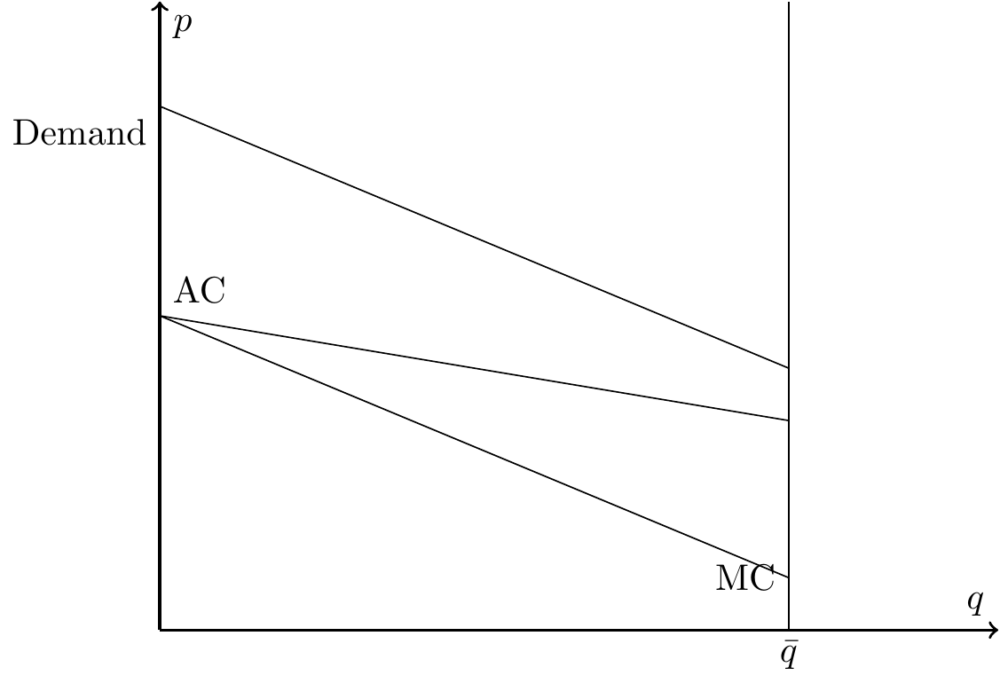

Adverse Selection and Pricing
Motivation
In practice, people know more about their health than insurers. This is a form of asymmetric information.
Here’s a good example, Costs during special enrollment periods.
Motivation
- This creates adverse selection: higher-risk individuals are more likely to buy/keep insurance than lower-risk individuals.
- Consequences: risk pool becomes sicker on average → higher costs and potential market instability.
- Intuition: enrollment decisions reflect private expectations about future costs (e.g., sign-ups during special enrollment periods often follow new health needs).
Today’s Roadmap
- Adverse Selection
- Partial vs Full Unraveling
- Adverse Selection in Practice
Adverse Selection
Description of graph
- Demand (willingness to pay) for health insurance (downward sloping)
- Average cost (AC): average health care costs incurred by all enrollees
- Marginal cost (MC): additional health care costs incurred by one more enrollee
- Downward sloping because healthier individuals (lower cost) are willing to pay less for health insurance
Description of graph
- \(D>MC\) because willingness to pay is expected costs plus risk premium
- As price falls, additional—typically healthier—individuals enroll (move downward along demand).
- AC declines as healthier entrants join.
- MC tracks the cost of the next (healthiest) entrant and lies below AC.
Competitive Equilibrium with Community Rating
- With sufficient competition and a single premium for all (community rating), equilibrium occurs where Demand = AC.
- At this point the premium exactly covers expected costs → zero-profit condition.
- Use this stylized benchmark to isolate the role of adverse selection (abstracting from imperfect competition, risk adjustment, etc.).
Types of Equilibria
- Full Insurance
- Under-insurance (Partial Unraveling)
- Full Unraveling
1. Full insurance

2. Under-insurance (partial unraveling)

3. Full unraveling

Understanding Unraveling
For any amount of unraveling, we need at least two features in the market:
- Individuals select plans based on health needs (which is private information)
- Common price to all enrollees of a given plan (community rating)
Understanding Unraveling
Think in periods: if initially \(AC > p\), insurers incur losses and raise \(p\).
- Higher \(p\) moves the market up the demand curve; healthier enrollees drop coverage.
- The pool becomes sicker → AC rises, prompting further premium increases.
- Process converges to a smaller, high-cost pool (partial unraveling) or collapses altogether (full unraveling).
Numerical Example
Assume the insurer’s cost function is \(C=100q - 2q^{2}\), where \(q\) denotes the number of people enrolled in the plan. Further assume that demand is given by \(D=140-4q\). Assuming the insurer enters the market with \(p_{1}=40\),
- What is the next year’s price (if profits are $0 based on period 1)?
- What is the equilibrium price?
Answer
- To solve this, we need to first calculate the marginal cost curve, \(mc=100-4q\), and the average cost curve, \(ac=100-2q\).
- At a price of \(p=40\), we know that quantity demanded will be \(q=25\). At that point, the average cost is then $50
- Since \(AC>p\), the firm is losing money.
- If they set prices to break-even, then next period’s price would be set to their observed AC, \(p_{2}=\) $50.
- We can find the equilibrium price as the point where the AC and D curves intersect, which occurs at \(q\) of 20 and price of $60.
In-class Problem: Adverse selection
Assume that the insurer’s cost function is given by \(C=100q - 2q^{2}\), where \(q\) denotes the number of people enrolled in the plan. Further assume that the inverse demand function takes the form, \(D=110 - 3q\), and that there are 20 individuals total in this market.
- If the insurer enters the market at a price of $65, what is the insurer’s profit (or loss)?
- What price does the insurer set next year if they set price equal to average cost in the prior year?
- What is the equilibrium price in this market?
- What if there is a $10 penalty imposed for those that do not purchase health insurance?
Adverse Selection in Practice
- How does adverse selection play out in real-life environments?
- How might we help curb its effects?
Death spiral!

Death spiral!
So, are the exchanges in a “death spiral”?
Standard & Poor’s writes: “The ACA individual market is not in a ‘death spiral.’ However, every time something new (and potentially disruptive) is thrown into the works, it impedes the individual market’s path to stability.”
Some potential policy solutions
- Subsidize consumers
- Subsidize insurers
- Mandate purchases
Can you examine each of these policies graphically? How do they differ from the patient’s or government’s point of view?
Main takeaways
Explain, using a graph, how unraveling could occur in a market with adverse selection.
Discuss and show graphically how an individual mandate or subsidies could help to alleviate or minimize the adverse selection problem.